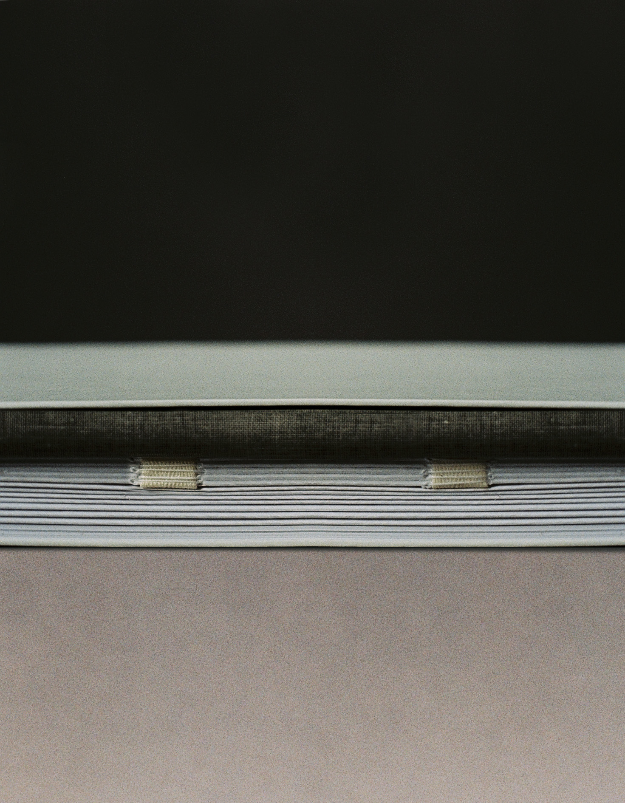
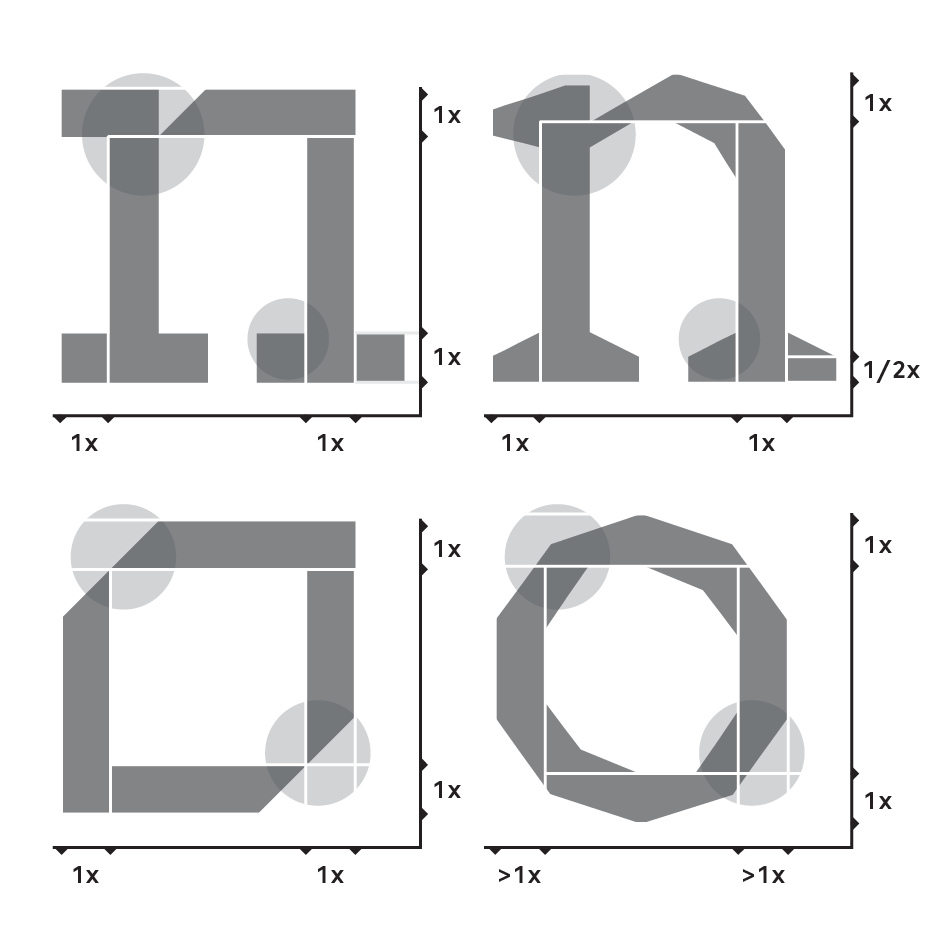
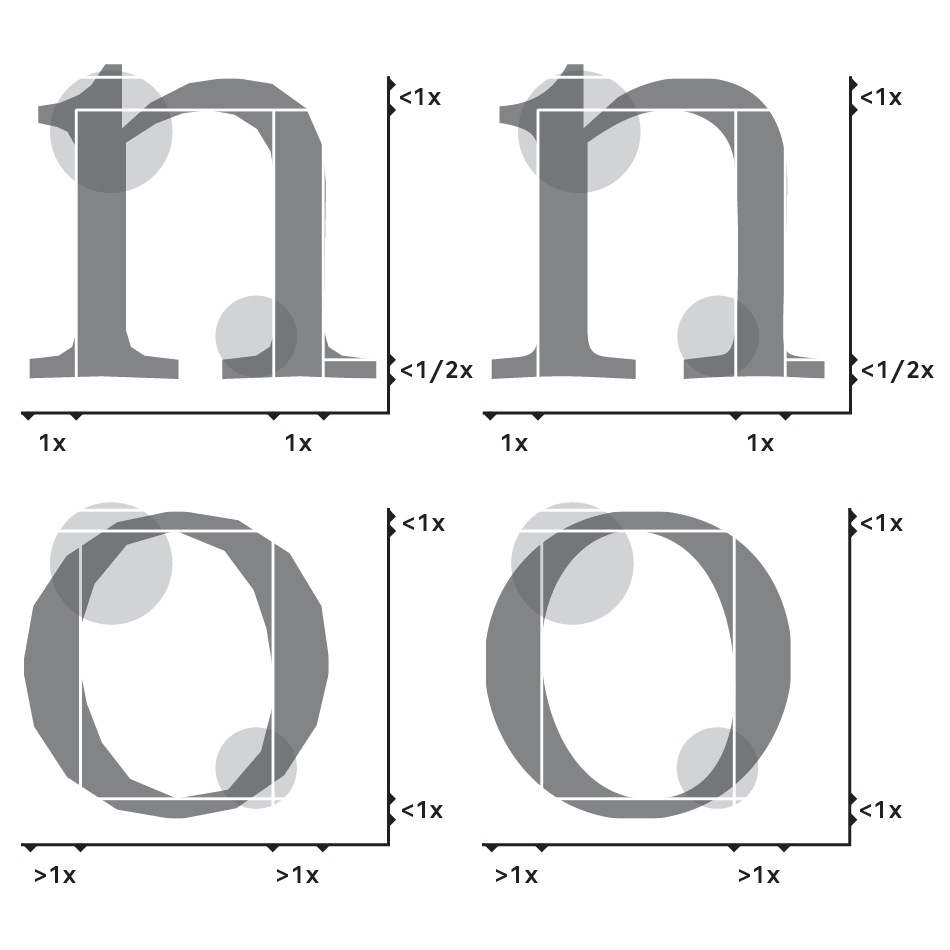

Typography
If on a winter’s night a traveller
When we deal with a text, not always we pay attention to set it in a face and form in which it actually belongs. The hypothesis is to create an object–book where every variable, both typographic and physical, is designed starting from the structure of the novel, evolving with it. The focus is the definition of a typefaces’ system that evolves chapter by chapter, following the narration. The main idea is to determine a system that adds gradual levels of definition and details; that means to start from a simple geometric typeface, with standard characteristics, and to arrive to a real text typeface. The aim is to understand how a typeface can change the perception of a specific content, becoming part of the message. Other interventions have been designed, like the system of grids, the application of different papers or the binding. The definition of a system of modular interventions, really simple if considered in themselves, represents how the starting hypothesis was proved. The system wants to show the complexity of the novel, making the book essential part of the story.
MA thesis project realized at Politecnico di Milano under the supervision of Marta Bernstein & Christoph Dunst – Milan / Berlin – 2014 / 2015
Honoured with the “Certificate of Typographic Excellence” – TCD62.
The binding represents the modularity of “If on a winter's night a traveller” structure. Running through the chapters, the binding system goes from a classical book binding to a booklet and, in the end, spare pages.

The binding, the grid system, the typefaces and the paper are all elements
that define the book and reflect the story, the way how the narration evolves.
The different kinds of paper change in relation to the multiplication movement of the book.
The binding wants to show the modularity of the story, how the single parts relate to each others.

In the scheme are represented the four “masters” of the system: Ludmilla A, Ludmilla C, Simoncini
Garamond D and Simoncini Garamond B.

The proportions, the thickness of strokes, the contrasts change in order to go from a geometric and
systematic typeface to a real text one.